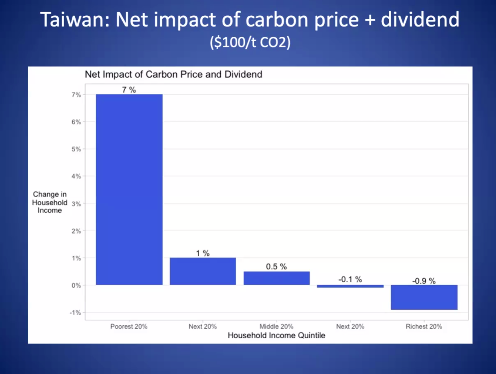

碳紅利：碳交易模型的下一步？
2022-12-21
碳定價是全球發展趨勢，當我們討論到碳定價時，通常就是兩種系統：「碳稅」（Carbon Tax/Fee）或者「碳權交易」（Cap and trade/ETS），前者是由政府直接開徵，獲得的稅金作為氣候行動相關用途，而後者則是由政府免費或拍賣發放排碳權，由各大企業自行交易（多排則需多買碳權，少排則可賣碳權）。
然而，除了這兩個主流的碳定價系統以外，還有一種更貼近社會正義的碳定價機制——「碳紅利」（Carbon Dividend）。
James K. Boyce是美國麻省大學經濟系榮譽退休教授，長期推動碳紅利政策不餘遺力，在今年十月受中研院歐美研究所邀約進行線上分享「碳紅利政策」。
碳紅利經濟體系如何運作？對你我、企業體有什麼好處？在推動的過程如何受到阻礙？櫛構科技在這篇文章整理 Boyce 教授的演講重點分享。
碳紅利是誰的紅利？
簡單來說，碳紅利就是將針對碳排放所收取的碳稅直接回歸於人民，以碳紅利的方式發放。
這個模型可以用阿拉斯加的石油權利金（Permanent Fund Dividends, PFD）做比方：阿拉斯加生產石油，政府基於本地產的石油屬於阿拉斯加人民的精神，根據每桶油收取一定數量的權利金，並且每年以發放紅利的方式將權利金平均分配給人民，每人每年約可得1000~2000美元。
在2022年是石油權利金是史上最高的一年，每一位阿拉斯加居民可以獲得3,284美元。
碳紅利的概念就類似石油權利金：大氣層是所有居民共有的，任何單位（企業、家戶）排放溫室氣體造成外部成本，政府都應該因此收取權利金（「碳租」 "carbon rent" ），平均回饋給所有民眾。
而以佔比74%的居家碳排放來說，最高碳排放源通常來自top 1%，因此在碳紅利模型中，實際上支付大量碳租的是富有階級，而這筆錢則以碳紅利的方式進入較低碳排的人民口袋中。 
Boyce 教授估算，若實施碳紅利模型，在最富有的20%人口將減少0.9%的收入，而對於最貧窮的20%人口則會增加7%收入。也因此，碳紅利模型是符合社會正義的碳定價系統。
加拿大成功案例
目前成功引進碳紅利系統的國家是加拿大（與瑞士），講者提到在今年他們首度將碳定價調整高到降低了需求，並且人民會真的收到有感的碳紅利（2022年七月，成人最高可收到193.5加幣，小孩56.5加幣，每季分期支付）。
碳紅利政策推動困難
如果碳紅利政策符合社會正義，又對全民有益，為何大眾幾乎沒有聽過呢？ Boyce 解釋，最主要的困難其實是行銷問題，因為這項政策對資本家並不討喜，因此過去幾乎不會獲得任何行銷資源。
Boyce 教授分享，在最早推行碳定價機制時，碳紅利方案其實是有和總量管制交易（Cap and Trade）方案一同進入華盛頓議會討論，結果碳紅利方案立馬就被否決了，背後推手很可能就是石油公司所雇用的說客。
然而好消息是，因為在加拿大與瑞士均已經看見成功案例，美國議會中也漸漸出現一些偏向碳紅利的法案。
台灣需要碳紅利嗎？
Boyce 教授表示，台灣正處在推動碳定價機制的當頭上，如果只設計碳價而沒有設計如碳紅利的回饋，等於變相對人民直接漲價。對此，當局者必須思考國際上的前車之鑑，例如2018年11月馬克宏直接調漲汽油價格，引發黃背心運動，成為法國自1968年五月風暴以來最大規模的社會動盪。
而更甚地，政府單位本身也是碳排者，直接施行碳稅而沒有某種程度的補償，也是直接增加政府預算支出，增加政府的營運成本。
而對於企業體， Boyce 則建議將碳紅利的收取與發放保留在產業內，例如將半導體等高能源密集產業收取的碳稅依照產值發放回給該產業內各大企業，成為產業內以減碳為標竿的資源重新分配，反而提升減排動機，如此就算面臨CBAM、CCA等歐美碳邊境税威脅，碳紅利制度仍然可以提升台灣企業競爭力。
面對未來碳定價、碳邊境税威脅，企業思考自身減碳策略是重要的生存課題。運用資料科學與AI大數據系統分析，櫛構科技可以協助企業獲取高解析度資料，標記高碳排因子，制定減碳策略不用靠感覺。
除了隨手關燈，我們可以做更多
相關資源
更深入理解碳紅利（Carbon Dividend）可以看這部影片：